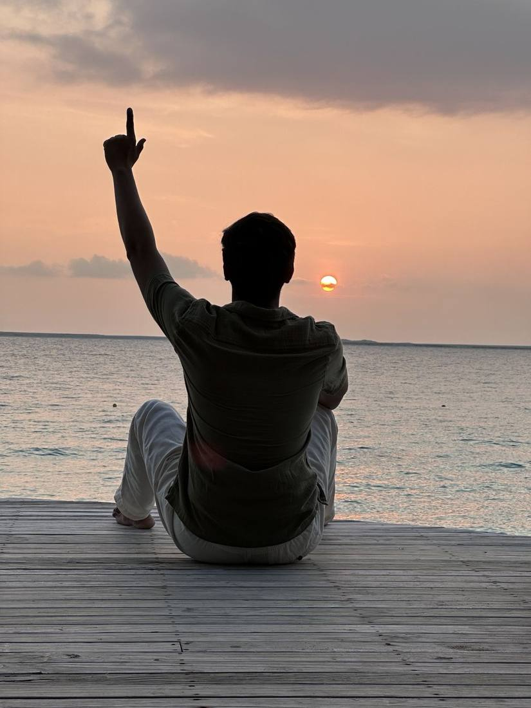
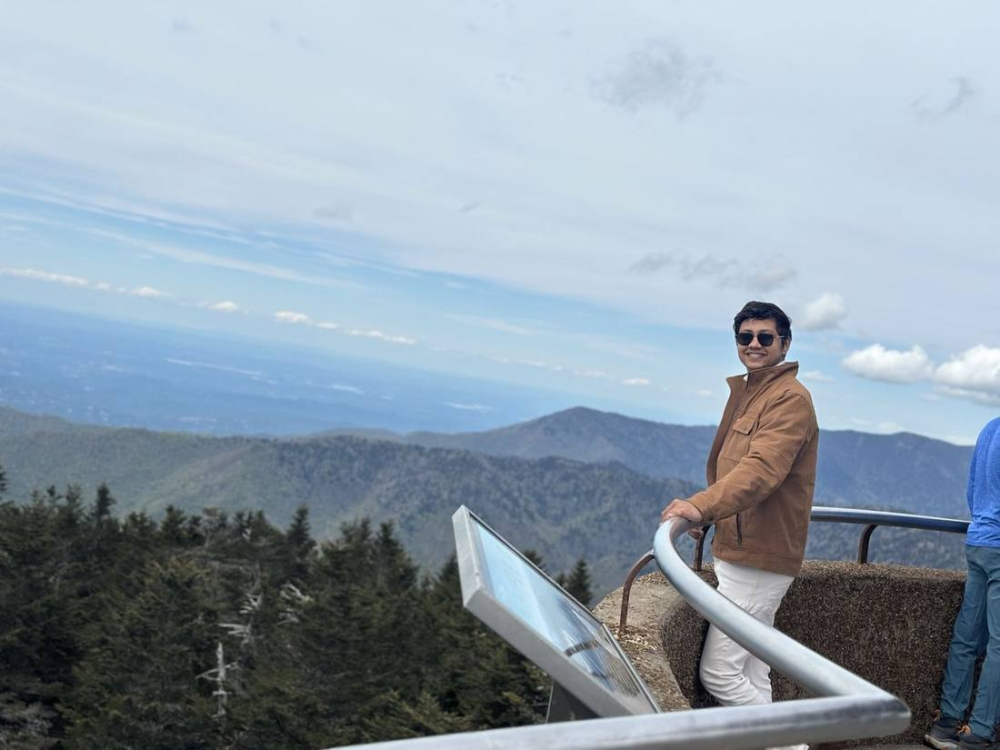
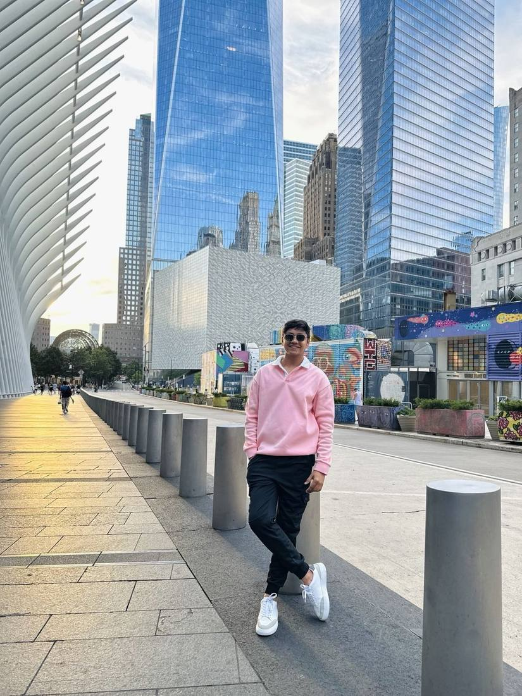
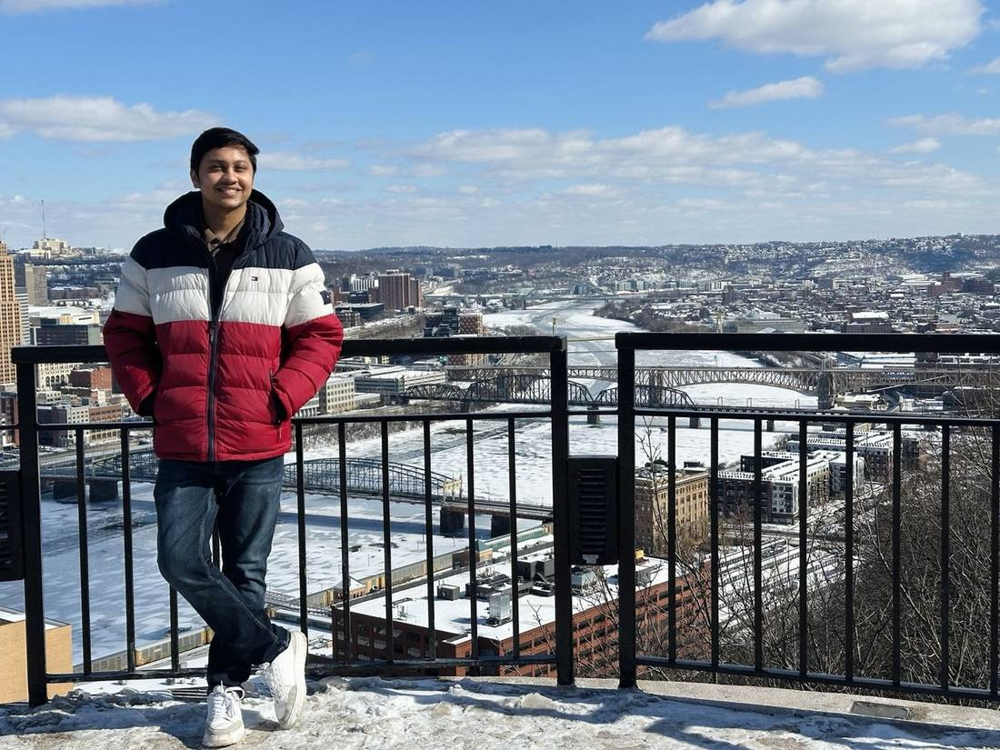

01 · Slow down
Last light
The kind of place where the plan can wait.
I like trips that become stories: road trips, unexpected stops, good food, night skies and enough empty space in the plan for something unplanned.
Places matter. The mood, detours and tiny moments around them are what usually stay with me.

The kind of place where the plan can wait.
Architecture, neighborhoods and accidental discoveries.

The drive should earn its place in the trip.

Some days are better without optimization.

Not every destination is a one-time visit.
“A good itinerary gets you there. A good trip gives you something you didn't plan for.”
Passport ModeThere is still a competitive side waiting.
Game On →Back to Productflix